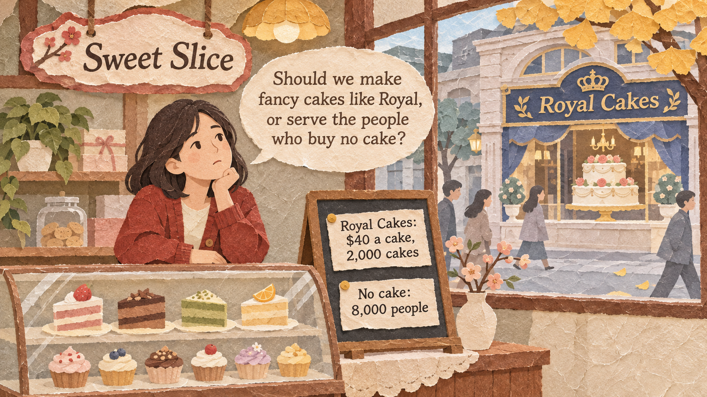
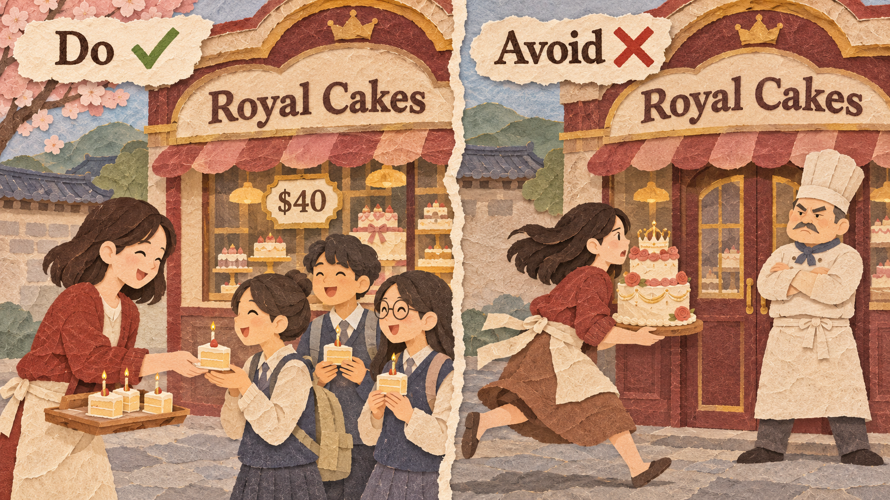
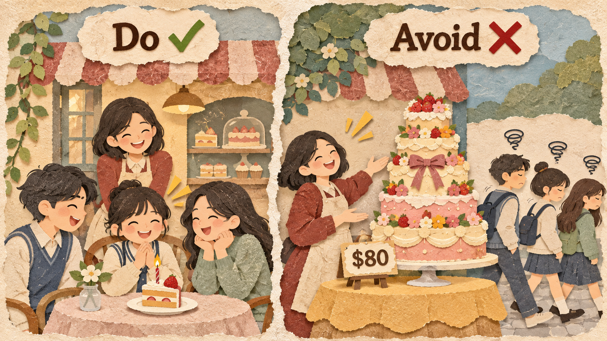
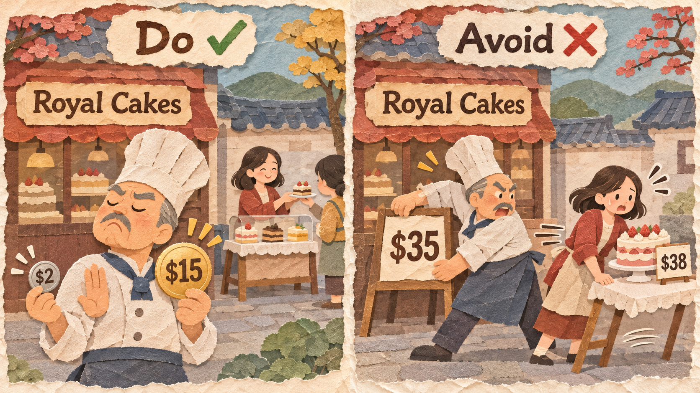
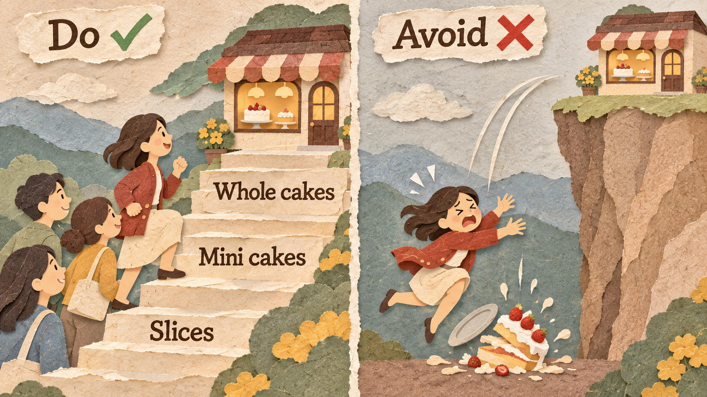

Sweet Slice is Lily's tiny cake shop near campus: single slices and cupcakes, ready to eat. Across the street is Royal Cakes, the leader in town.
| ROYAL CAKES (LEADER) | SWEET SLICE (LILY) | |
|---|---|---|
| What it sells | Decorated whole cakes for 10 people, ordered 2 days ahead | Single slices and cupcakes, ready now |
| Price | $40 a cake | $5 a slice |
| Sales a month | 2,000 cakes | 1,500 slices |
| Profit | $15 a cake | $2 a slice |
A small company beats a strong leader without fighting it head-on. It starts with customers the leader ignores: people who buy nothing because the leader is too expensive or too hard to use, or customers who get more than they need. It offers a simpler, cheaper product that is good enough. The leader does not fight back, because these customers earn it little profit. Then the newcomer improves step by step until it is good enough for the leader's own customers.
Begin with non-consumers or with the leader's least profitable customers. They are easy to win, and the leader will not miss them.

Sweet Slice starts with the 8,000 people who want a cake but buy none. Royal Cakes does not serve them, so it will not fight for them.
Going straight after the leader's best customers. The leader is strongest exactly there, and it will fight hard to keep them.
Do not try to be better than the leader at everything. Be good enough at the main job, and much easier and cheaper.

A $5 slice with a candle, ready now, is enough for a birthday with two friends. They do not need a 10-person cake.
Adding a famous chef, fancy decorations, and a high price to look like the leader. Then the product is neither cheap nor better.
If copying you would earn the leader much less profit than its own product, the leader will ignore you, often until it is too late.

Royal earns $15 on each cake. Copying Sweet Slice would earn it about $2 a slice, so Royal protects its $40 cakes.
Choosing a model the leader can copy easily and profitably, such as the same cakes at a slightly lower price. The leader cuts its price and wins.
Use what you learn from your first customers to improve. When you are good enough for the leader's customers, they come to you at a lower price.

After a year of slices, Sweet Slice adds $12 mini cakes, then $25 whole cakes. Some of Royal's customers start to switch.
Spending a lot of money to grow very fast before the product works. A newcomer has little money and cannot survive big mistakes.
Netflix started in 1998 by renting DVDs by mail, with no late fees: slower than a Blockbuster store, but good enough for people who planned ahead. Blockbuster earned a large part of its profit from stores and late fees. In 2000, Netflix offered to sell itself to Blockbuster for $50 million; Blockbuster said no. Netflix started streaming in 2007. Blockbuster filed for bankruptcy in September 2010.
In March 2007, the phone company Safaricom launched M-Pesa: people send money with a simple text message on a basic phone and put in or take out cash at local shops. Fewer than 20% of Kenyans had access to a bank. Safaricom hoped for 350,000 users in the first year; by November 2007 it had more than 1 million active users. Later it added savings, loans, and bill payments.
Quibi launched in April 2020 with expensive short shows from Hollywood stars, made for phones. It raised $1.75 billion and charged $4.99 to $7.99 a month. But people already watched free short videos on YouTube and TikTok. Quibi announced it would close in October 2020, about six months after launch.
Webvan was a U.S. online grocery delivery company. Before it had many customers, it built large high-tech warehouses (about $35 million each) and planned to enter many cities quickly. It lost more than $800 million and went bankrupt in July 2001.
| EXAMPLE | RESULT | THE RULE THAT DECIDED IT |
|---|---|---|
| Netflix | Good | A model the leader did not want to copy (Rule 3) |
| M-Pesa | Good | Served people banks ignored (Rule 1) |
| Quibi | Bad | Attacked strong leaders with a pricier product (Rules 1 and 2) |
| Webvan | Bad | Grew too fast before the model worked (Rule 4) |
Non-consumers = people who need the job done - people who buy from the leader
Compare the leader's profit per customer today with the profit it would earn by copying you. If copying earns much less, the leader will probably not fight back.
Profit = profit per period x number of periods - one-time cost
What you give up to get something you value more.
Sweet Slice: Lily gives up the higher price of fancy whole cakes to win the 8,000 people nobody serves and to stay out of Royal's way.
A promise, written before you start, about which result would make you change your decision.
Sweet Slice: "If we sell fewer than 400 slices a week by the end of month 3, we will change the price or the menu."
Your task: For each new product, ask: Who are the first customers? Is it simpler and cheaper than the leader's, or better and more expensive? Non-consumers or over-served + simpler and cheaper = disruption.
| NEW PRODUCT | FIRST CUSTOMERS | SIMPLER OR BETTER? | ANSWER | WHY (RULE) |
|---|---|---|---|---|
| Example: a $2 phone app that works as a scanner; office scanners cost $200 | Non-consumers | Simpler, cheaper | Disruption | Rules 1, 2 |
| (a) A $3 rice-box stand for students who skip lunch because restaurants charge $12 | ||||
| (b) A famous steak house adds a $120 dinner for its best customers | ||||
| (c) A free app that fixes the light in photos; studios charge $50 to edit | ||||
| (d) A coffee chain adds a gold card with free drinks for its biggest spenders | ||||
| (e) $10 online cooking videos; cooking schools charge $500 a course | ||||
| (f) A phone maker adds a fourth camera to its most expensive phone |
Your task: Is QuickCut a real disruption, and should it open? Step 1: fill in the calculation table (next slide). Step 2: check the four rules and give a verdict (slide after).
Your task: Calculate each row and write the result in the last column. Later rows use earlier rows.
| # | WHAT TO CALCULATE | HOW | YOUR ANSWER |
|---|---|---|---|
| 1 | Non-consumers (Tool 1) | 50,000 - 20,000 | |
| 2 | Salon profit per haircut | $40 - $25 | |
| 3 | QuickCut profit per haircut | $8 - $5 | |
| 4 | How many times more a salon earns (Tool 2) | row 2 / row 3 | |
| 5 | QuickCut haircuts a month | row 1 x 10% | |
| 6 | QuickCut profit a month | row 5 x row 3 | |
| 7 | Profit over 12 months (Tool 3) | 12 x row 6 - 3 x $6,000 |
Your task: Copy the template. Replace every [bracket] with your numbers from Step 1 and your own words. The example shows a finished answer.
Your task: Help Lily choose A or B for the next 12 months. Step 1: calculate (next slide). Step 2: write a memo to the investor. Step 3: present it in 2 minutes.
Hire a top pastry chef; decorated whole cakes for $30, $10 profit each. Chef and ads: $20,000 once.
Expect 600 of Royal's 2,000 cakes a month; only 200 if Royal cuts its price.
Keep $5 slices, $2 profit each. Ads on campus: $5,000 once.
Expect 10% of the 8,000 non-consumers to become regular customers, each buying 3 slices a month.
Your task: Calculate each row and write the result in the last column. Later rows use earlier rows.
| # | WHAT TO CALCULATE | HOW | YOUR ANSWER |
|---|---|---|---|
| 1 | A: profit a month (600 cakes) | 600 x $10 | |
| 2 | A: profit over 12 months | 12 x row 1 - $20,000 | |
| 3 | A: profit a month if Royal cuts its price | 200 x $10 | |
| 4 | A: 12 months if Royal cuts its price | 12 x row 3 - $20,000 | |
| 5 | B: regular customers | 8,000 x 10% | |
| 6 | B: slices a month | row 5 x 3 | |
| 7 | B: profit a month | row 6 x $2 | |
| 8 | B: profit over 12 months | 12 x row 7 - $5,000 | |
| 9 | Royal earns $15 a cake. Would copying B earn it more or less? Copying A? (Tool 2) | compare |
Your task: Copy the template. Replace every [bracket] with your choice, your numbers from Step 1, and your own words. The next slide shows a finished memo for QuickCut.
Explain disruption and how it differs from sustaining innovation.
Find non-consumers and use the leader's profit test.
Compare a head-on attack with a disruption plan and write a decision rule.
Christensen, C. M., Raynor, M. E., & McDonald, R. (2015). What is disruptive innovation? Harvard Business Review, 93(12), 44-53.
Newsweek (2021). Fact check: Did Blockbuster turn down the chance to buy Netflix for $50 million?
Safaricom (2017). The M-PESA wonder: how it all began.
NBC News (2020, October 21). Quibi is shutting down just months after launching.
TidBITS (2001, July 16). Where Webvan went wrong.
Open these slides only after you finish. Compare your numbers and reasons with the answers, and ask about any difference.
| PRODUCT | FIRST CUSTOMERS | ANSWER | WHY (RULE) |
|---|---|---|---|
| (a) $3 rice box | Non-consumers | Disruption | Simpler, cheaper (Rules 1, 2) |
| (b) $120 steak dinner | Leader's best | Sustaining | Leader is strong here (Rule 1) |
| (c) Free photo app | Non-consumers | Disruption | Simpler, cheaper (Rules 1, 2) |
| (d) Gold card | Leader's best | Sustaining | For top spenders (Rule 1) |
| (e) $10 videos | Non-consumers | Disruption | Simpler, cheaper (Rules 1, 2) |
| (f) Fourth camera | Leader's best | Sustaining | Better and pricier (Rule 1) |